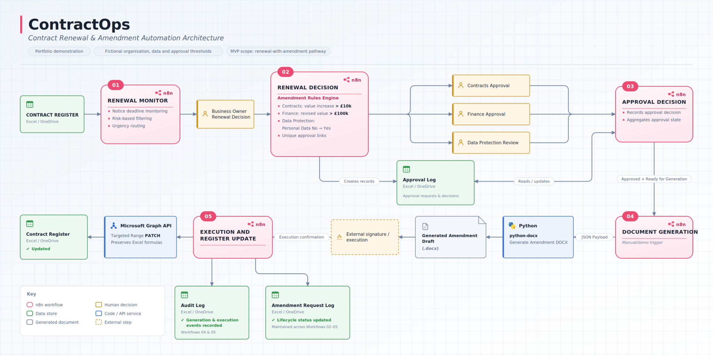

Featured project
ContractOps
Contract Renewal & Amendment Automation
An end-to-end contract operations prototype covering renewal monitoring, rules-based approval routing, document generation, execution updates and structured audit logging.
n8nPythonpython-docxMicrosoft GraphExcel / OneDrive
5 connected workflowsRenewal monitoring through amendment execution.
Rules-based approvalsContracts, Finance and Data Protection routing.
Document automationApproved data becomes a generated amendment draft.
Formula-safe updatesTargeted Graph PATCH preserves calculated Excel columns.
